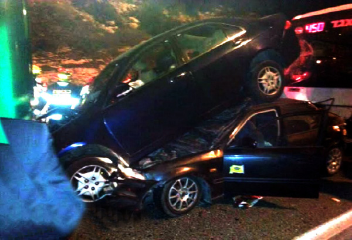

Saved from Harm in the Merit of Shlichus
“The Rebbe loves us and showed us a love so great that we responded with an increase in spreading the wellsprings of Chassidus and the announcement of the Redemption.” After midnight, the Shoresh Interchange along the Tel Aviv-Yerushalayim highway was virtually free of traffic. Suddenly, the sight of flashing lights signaled repair work along the road. Rabbi Pinchas Kirschenzaft hit the brakes at the last possible moment, but the bus behind him slammed into the family car, crushing it completely. As a result, the two cars in front went flying – one into the opposite lane, the other on top of the car containing the four members of the Kirschenzaft family, including two small children. The drama, the horrific accident, the Ahavas Yisroel, and the great miracles – as told by the Baal HaMaaseh.

Sunday, the 9th of Adar Rishon 5774, started like any other normal day in spreading the wellsprings of Chassidus. It had already been two and a-half years since I, along with my wife and two daughters, had left Nachalat Har Chabad to join my parents on their shlichus at the Nitzan settlement, working with the refugees of the former Gush Katif communities.
A major part of our activities is the “Mitzvah Tank” that I operate daily with an organized route, heading each time to a different yishuv populated by former Gush Katif settlers. The activities we conduct are primarily with children. At every yishuv, a group of youngsters gathers at a pre-arranged time and location. We say the Twelve P’sukim with them, along with a d’var Torah and an inspiring story.
Inside the tank, we also operate a “mobile library” filled with numerous children’s books and films on computer disks. The children’s names are stored on computer, giving them the opportunity to borrow four books a week, after they return those they borrowed the week before. These activities have acquired a tremendously positive reputation, as hundreds of children from the various yishuvim participate regularly.
On that Sunday afternoon, we went out with the Mitzvah Tank on our customary weekly visit to the Ein Tzurim settlement. My younger brother joined me, and together we conducted some very special Tzivos Hashem activities. On this particular day, the participation was especially high. Dozens of local children were already impatiently waiting for us in the settlement’s central square. The atmosphere was delightfully calm. There wasn’t even a hint of the dramatically traumatic experience we would endure in just a few hours.
When we completed our activities I returned home. My wife and our daughters, Chaya Mushka and Sheina, were already dressed in their finest, as we made our way to Yerushalayim for the wedding of my wife’s cousin, R’ Levi Yitzchak Meshi-Zahav.
The joy and emotion at this wedding was tremendous. It was thrilling to watch the parents rejoicing, as they did the traditional dance for those who have merited to marry off all of their children.
We left the hall rather late, shortly after midnight. We buckled our daughters into their seats, and we set out on our journey back home.
BETWEEN TWO BUSES AND A CAR ON THE ROOF…
The car was traveling gently along the curves passing the Castel National Park, heading towards the Shoresh Interchange. Traffic on the roads was extremely light, something to be expected at such a late hour. My mind was already working on plans for tomorrow: which yishuv would we visit first, how we could intensify our outreach activities, how to connect more Jews to the Rebbe, etc. As I was thinking, I also spoke with my wife about the joyous evening’s events in Yerushalayim.
Suddenly, without warning, as we approached the Shoresh Interchange, I noticed the red-and-white flashing lights indicating a narrowing of the traffic lane due to construction. There had been no road signs calling for drivers to slow their speed, nor even the familiar plastic cones along the highway.
As soon as we made the curve, I saw a number of cars in front of me, which forced me to slam on the brakes and bring the car to a screeching halt. It appeared that these vehicles had also come to a sudden stop. All the calm and tranquility in our car disappeared in an instant. All the drivers at the scene admitted later that they had this feeling that something awful was about to happen.
Standing in front of me was a bus followed by two cars, and I was the third in line. When I suddenly hit the brakes, we found ourselves dangerously close to the car in front of us. I instinctively checked my rear-view mirror to see what was happening with the cars directly behind me. I couldn’t believe my eyes: An Egged bus en route to Ashdod was charging in our direction. It was clear that he wouldn’t be able to stop in time, making a rear-end collision unavoidable. I cried out to my wife that she should prepare herself for the impact of the bus from behind.
Seconds later, our little car sustained a powerful blow. It’s interesting that during those brief terrifying moments, the only thought crossing my mind was that we are a family that has experienced countless wonders. When we lived in Gush Katif, we bore witness to many miracles, above and beyond nature. Now, as we dedicated our lives working as the Rebbe’s shluchim, I was certain that he would be a faithful advocate before G-d on our behalf.
Now, weeks later, as I relive those terrifying moments, it’s difficult for me to explain from where I derived such absolute faith.
BLOOD-CURLING SILENCE
Immediately after the powerful impact upon the car, a blood-curdling silence reigned everywhere. I looked at my wife sitting in the seat next to me, as she looked at me with her eyes calling out for help. I immediately unbuckled my seat and hers. Our older daughter, Chaya Mushka, who had been sitting behind my wife, began to sob hysterically. I reassured my wife that if the child was crying, that’s a sign that she’ll be all right. Yet, I was still worried and a bit frightened, because our younger daughter, Sheina, hadn’t made a sound.
In a matter of minutes that seemed like an eternity, people started arriving at the scene from all directions, as my wife and I got out of the car. Looking ahead of me, I realized that I was in front of the first bus. I was puzzled. Where were the two vehicles that had been in front of me and behind the bus? Suddenly, I noticed a car on the other side of the highway. The force of the collision had sent him flying into the opposite lane. One thing still wasn’t clear to me: Where was the car that had been standing behind the first bus?
SLOWLY I BEGAN TO REALIZE THE INTENSITY OF THE MIRACLE
At this point, a middle-aged Jew approached me and asked if I was the driver of the car.
When I replied in the affirmative, he turned my attention to his car, lying on top of our car. In the midst of all the tumult and chaos surrounding me, I hadn’t noticed that the first car was sprawled on our roof. It turned out that the collision had thrust our car forward, sending one car into the opposite lane as ours went underneath the second car.
I slowly began to realize what an incredible miracle we had just experienced. If it had been a bus directly in front of us instead of another car, everything would have ended quite differently… We would have been crushed.
People got off the bus and looked at me and my wife with total shock. No one could understand how we had gotten out of that heap of metal alive, in one piece, walking around as if nothing had happened. When I looked at our car, crushed like a tin can, the first thing I tried to do was to free my daughters from the back seat, which had sustained the full impact of the collision with the bus. As I looked inside the car, I saw my wife’s seat in a reclining position.
“Did you move your seat back?” I asked her, but she said no. I looked at the car again in stunned disbelief. The car on top of ours had crushed the area above the passenger’s side.
For some reason, the force of the bus had pushed the seat back. If it had remained in an upright position, I don’t want to think what would have happened. The roof of our car had caved in from the weight of the car that had landed on us. Miracle of miracles. The third miracle is that we and our daughters had been securely buckled into our seats. The impact had been so powerful that without our seat belts, we all would have been thrown around in the car and sustained serious injuries.
THE HAND OF G-D
All this took place within a matter of minutes. A good Jew, who noticed me standing helplessly near the car trying to free my daughters, came over to help. Quietly and calmly, he asked the people around us to keep my wife back from the wreckage. Afterward, he told me that since he was certain that the two girls were no longer alive r”l, he didn’t want her to be exposed to the tragic sight.
Our older girl’s head was between my wife’s seat and the baby seat where she was buckled in. Gently and carefully, we removed the chair and pulled her out through the window. We couldn’t open the right door, as it had been totally crushed.
I looked at my daughter, who was stunned by all the confusion around her. I checked her and saw that she didn’t have a scratch on her. She wasn’t complaining of any pain, and all she wanted was for us to hold her. We then immediately got to work freeing my younger daughter, Sheina, who had been sitting in the baby seat behind me. She was totally alert, calm, and tranquil. I checked her out as well, and I saw that she too had not been injured.
At this point, I was finally able to get a better look at what had happened to my car. There are no words to thank G-d for the great miracle He has done for us. The car had been turned into a hunk of scrap iron, totally destroyed.
“FROM WHERE DO YOU HAVE SUCH TREMENDOUS MERITS?”
Many people standing around the accident scene approached me and asked where we had come from. The girls were still dressed in festive attire. “From where do you have such tremendous merits?” We replied that we are shluchim in the army of the Rebbe, Melech HaMoshiach, and those serving as messengers in the fulfillment of his commands are protected from harm. I watched and listened to people walking around our wrecked automobile, looking at the Rebbe’s picture with the words “Welcome Moshiach”, talking among themselves about the miracle that the Lubavitcher Rebbe had done for his Chassidim.
It was amazing to see in those moments the tremendous unity of Am Yisroel. People brought blankets from their cars to protect the girls from the bitter cold of that night. Others came with bottles of water. One young man went into the wreckage in an attempt to find my wife’s eyeglasses that had flown off and disappeared. When no one was able to find my yarmulke, a grandmother came up to me and gave me a new kippa she had just bought for her grandson in honor of his bar-mitzvah… “I’ll buy him a new one,” she said resolutely. People repeatedly asked if we needed any help and showed genuine concern for our welfare.
During those few calm minutes, the extent of the miracle became even more apparent.
The rescue motorcycles were the first to arrive on the scene. After a few superficial examinations, we were transported to Hadassah-Ein Kerem Hospital for a more thorough check-up, and they found no internal injuries. Before the night was over, my wife and I had received our release papers, although the doctors suggested that the girls remain in the hospital until the following morning.
Shortly after daybreak, I met a Chabad Chassid who had heard about the accident and came to see how we were doing. My tzitzis had been ripped open in the trauma room, and he immediately went out to buy me a new pair. Similarly, he brought a kerchief for my wife and even invited us to have breakfast at his house.
THE CHITAS ON THE FRONT SEAT
By eight o’clock the next morning, we had all been released from the hospital, and after having breakfast at the home of this Chassid, he got into his car and asked us to join him. He then proceeded to drive us to our home in Nitzan.
When we arrived home, members of our family were waiting for us along with friends and neighbors, who reacted with great excitement and emotion when they heard the details of this incredible miracle. Even people who aren’t Lubavitchers, or anything close to it, made the clear connection between our being shluchim and the miraculous salvation we had experienced.
People sent me pictures taken in the media from the accident scene. It was amazing to see the Chitasim scattered in the front of the car, with another seifer lying on my seat. The cynics asked if we had placed the s’farim there. Go try and explain to them that in the midst of the chaos following such a dreadful accident, concerned for your life and your family’s, it would never enter your mind to organize some false display.
THE CAR SHORTENED BY THREE FEET…
The following Friday, I went over to the junkyard to see the pile of scrap-metal that had once been my car. I brought my camera to take photographs as testimony to the miracle that G-d had done for me.
When I arrived there, I made considerable efforts to open the door, the only one still intact… I then revealed even more details to our incredible story: The crushing impact to the rear had stopped just short of the gas tank, which could have ignited and burst into flames. Chaya Mushka’s car seat had apparently supported the car that “landed” on ours, firmly wedging itself between the car roof and the seat. The section of the roof over my wife’s seat had been pushed down to the level of her head. Yet, for some unexplained reason, her back rest had shifted backward a split second before the accident, and she had been in a prone position. If this had not happened, the car landing on our roof would have inflicted r”l a potentially life-ending injury on her. I also noticed that the floorboards and all our seats, including the girls’, were covered with shards of glass, yet none of us were injured. The rear license plate was now where my wife’s back rest had been, indicating that the car had shortened in length by about three feet…
The manager of the junkyard where the remains of our car were located told me that he had never seen anything like it before.
IMMEDIATELY AFTER THE ACCIDENT, A NEW CLASS IN THE REBBE’S SICHOS
The first thought running through my mind immediately after we returned to Nitzan was that the Rebbe loves us and showed us a love so great that we must respond with an increase in spreading the wellsprings of Chassidus and the announcement of the Redemption. A few minutes later, I met a member of the local community who had previously hosted a Torah class in his home. Unfortunately, the class had been discontinued for various technical reasons. While he had wanted to resume the class for some time, the plans never materialized. Now, upon meeting him after this miracle, I told him that the time had come to restart the shiur, and he gladly agreed.
This was the first outreach activity after the accident – the establishment of a new class in the sichos of the Rebbe, Melech HaMoshiach.
I recall a moving story that we had experienced a few days earlier at the village of Amatzia, located near Kiryat Gat. We had been scheduled to visit the location that week, but we were unable to come. We are usually very punctilious – same day, same time. Sometimes, however, it doesn’t work out. Two hours after we were due to arrive, one of the local community members called me to ask when we would be coming. He added that his son was waiting for us impatiently and he didn’t want to disappoint him.
“What’s so urgent?” I inquired. “Does he want to return a seifer that he’s finished reading?”
“No,” the father replied. “He’s waiting to say the Twelve P’sukim.”
I realized that we wouldn’t get to the yishuv that night, so I suggested that he bring his son to the phone, and we would proclaim together the Twelve P’sukim – and Yechi Adoneinu.
Immediately after the accident, I thought about this occurrence, and I made a decision to intensify our outreach work in general, and with children in particular.
The following day, after things had calmed down a bit and the telephone had stopped ringing off the hook, my wife and I sat down to write a letter to the Rebbe. After thanking him for the miracle, we asked for his advice on what we should be doing now. We opened Vol. 13 of Igros Kodesh to pg. 167. It was a fascinating letter to the Zilberstrom family, after the murder of Rabbi Simcha Zilberstrom and his five students, may G-d avenge their blood, at the Kfar Chabad vocational school in 5716. In this correspondence, the Rebbe laid the foundation for his well-known position that after a time of great tragedy, one must grow and become stronger.
…I have received the recent news of the school groundbreaking in Kfar Chabad, and I was especially pleased to learn that she was present and participated in this, because all Jews are believers, children of believers, that the main aspect to man is his soul, a literal portion of G-d Above, and that the soul is eternal. Furthermore, the ultimate purpose of the creation of man on earth is to take action in the world… For when we connect the soul to action in this world, and particularly to continually growing action that bears fruit … this is a victory against death, representing the greatest pleasure it can cause for the soul. This is particularly so when the things are done in the same place where the incident took place. It is my earnest hope that the Creator and Master of the World will bless her with a good and long life, and may she see with her own eyes students learning Torah and a vocation, for the glory of Israel from the school where she participated in its groundbreaking, continuing in the same path that Simcha Hy”d followed and for which he dedicated his life.
•
In the initial days after the accident, we had an opportunity to do “mivtzaim” with the ultra-Orthodox community through its various media channels. As we are equally observant in fulfilling G-d’s commandments, they closely followed the accident and its aftermath from every possible angle. One of the more prominent interviews I gave was with R’ Ami Maimon on Radio “Kol B’Rama”. After I told him about the great wonders we experienced during the accident, he inquired about the importance of keeping a Chitas for protection and safety. He then gave me several minutes to explain to tens of thousands of listeners about the unique segula the Rebbe, Melech HaMoshiach, bestowed to this seifer, including the role it played in our miraculous rescue.
It is our fervent hope and prayer that from our family’s personal miracle, we will soon come to the great miracle for which the entire Jewish People are waiting and longing – the hisgalus of the Rebbe, Melech HaMoshiach, immediately, mamash, now!
Mdobry. "Saved from Harm in the Merit of Shlichus." Beis Moshiach, no. 920 (March 19, 2014).